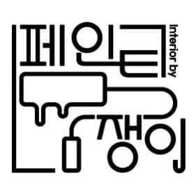

상담 후 범위 정리
PROMOTIONAL LANDING PAGE
칠하는 일을 넘어 공간의 인상을 디자인합니다
페인트쟁이는 눈에 먼저 들어오는 톤과 마감, 그리고 현장에서의 정돈감까지 함께 챙기는 시공 브랜드입니다. 집은 더 편안하게, 매장은 더 또렷하게, 오래된 벽은 더 새롭게 보이도록 공간의 분위기를 다시 세팅합니다.
- 깔끔한 보양과 마감 중심
- 주거·상가·사무공간 대응
- 부분 보수부터 전체 시공까지
빠르게 판단할 수 있게
견적 상담 전에도 어떤 공간을 어떻게 바꿀지 감이 오도록 핵심 사례와 진행 흐름을 한 페이지에 담았습니다.
SIGNATURE CI

굵은 라인, 도구의 직관성, 단번에 읽히는 이름.
브랜드의 첫 인상부터 시공 감도까지 이어집니다.공간 성격에 맞는 톤 제안
보양부터 마감까지 정돈감 유지
주거·상가·부분 보수 유연 대응
ABOUT
단순한 도색이 아니라, 머무는 느낌을 바꾸는 작업
보양이 깔끔해야 결과도 깔끔합니다
페인트 시공은 칠한 면만 보는 일이 아닙니다. 바닥, 몰딩, 문틀, 가구 주변까지 현장을 정리하는 방식이 결과의 신뢰도를 만듭니다.
공간에 맞는 톤을 제안합니다
너무 튀지도, 너무 밋밋하지도 않게. 용도와 분위기에 맞는 컬러 밸런스를 함께 고민해 더 오래 만족할 수 있는 선택을 돕습니다.
생활 동선을 고려해 진행합니다
주거 공간과 운영 중인 매장은 일정과 동선이 중요합니다. 필요한 구간부터 순차적으로 진행해 불편을 줄이고 작업 흐름을 정리합니다.
SERVICES
필요한 공간에 맞춰 유연하게 대응합니다
주거 공간
아파트, 빌라, 방 한 칸 리프레시, 전체 분위기 변경까지 생활 공간 중심 시공.
상업 공간
매장, 카페, 쇼룸, 오피스 등 브랜드 무드가 중요한 공간의 표정 정리.
부분 보수
오염, 벗겨짐, 찍힘, 이색 문제 등 눈에 거슬리는 구간을 빠르게 보완.
포인트 시공
한 면만 바꿔도 공간은 달라집니다. 포인트 월과 디테일 구간도 섬세하게 진행.
PORTFOLIO
한눈에 읽히는 시공 사례 구성
실제 사진과 후기를 넣기 전에도 구조만으로 신뢰감이 생기도록, 업종과 결과가 바로 읽히는 카드형 포트폴리오로 구성했습니다.
APT LIVING
주거 리프레시
노란 기가 돌던 벽면을 밝고 정돈된 톤으로 재정리
거실과 복도 중심 재도장, 몰딩 주변 보양, 생활 동선을 고려한 순차 작업으로 집 전체가 넓고 안정적으로 보이게 만드는 방향의 사례.
CAFE / SHOP
상업 공간
브랜드 간판색과 어울리도록 매장 벽면 무드 통일
방문객이 사진을 찍었을 때 더 깔끔해 보이도록 배경 톤을 정리하고, 포인트 벽면만 따로 살려 공간의 인상 대비를 만드는 방식의 예시.
OFFICE
사무 공간
낡아 보이던 벽체를 선명한 첫인상으로 리셋
출입구 주변, 회의실, 복도처럼 인상이 남는 구간을 우선 정리해 전체 리뉴얼 없이도 업무 공간 분위기가 달라지게 만든 케이스 구성.
HOW TO USE
실제 자료 반영 가이드
사진과 짧은 설명만 넣어도 바로 영업에 쓰기 좋은 구조
Before/After
사진 2장 배치
시공 포인트
문장 2~3줄 요약
공간 유형
주거·상가·오피스 표기
WHY PAINTJANGI
시선은 벽에서 멈추고, 인상은 전체 공간으로 번집니다
깨끗한 마감은 공간을 넓어 보이게 하고, 좋은 톤은 브랜드를 더 또렷하게 기억하게 합니다. 페인트쟁이는 작업 자체보다 결과 이후의 분위기를 먼저 생각합니다.
프로젝트 상담 연결하기PROCESS
복잡하지 않게, 필요한 단계만 분명하게
공간 용도, 범위, 현재 상태를 먼저 확인합니다.
면 상태와 보수 필요 여부, 작업 동선을 정리합니다.
원하는 분위기와 예산에 맞춰 시공 방향을 구체화합니다.
오염 방지와 마감 퀄리티를 함께 고려해 진행합니다.
현장 정리와 최종 확인까지 깔끔하게 마감합니다.